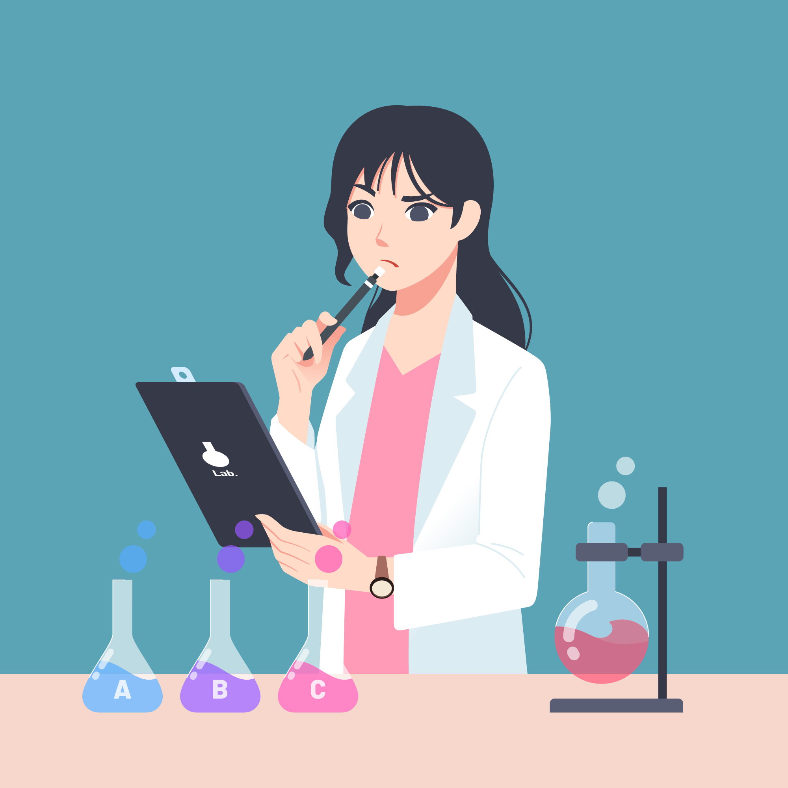

Goals
Goal 1: Define the parts of the Experimental Design.
Goal 2: Apply Experimental Design knowledge to an experiment to identify the parts of the experimental design.
Goal 3: Graph the data from an experimental design experiment.